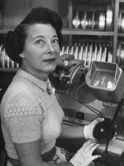

| Oscar Nominations | ||||
|---|---|---|---|---|
| Ceremony | Film | Category | Role | Result |
| 23rd Academy Awards Oscars 1951 |
All about Eve | Film Editing | Editor | Nominated |
| 17th Academy Awards Oscars 1945 |
Wilson | Film Editing | Editor | Won |
| 16th Academy Awards Oscars 1944 |
The Song of Bernadette | Film Editing | Editor | Nominated |
| 12th Academy Awards Oscars 1940 |
The Rains Came | Film Editing | Editor | Nominated |
| 11th Academy Awards Oscars 1939 |
Alexander's Ragtime Band | Film Editing | Editor | Nominated |
| 9th Academy Awards Oscars 1937 |
Lloyds of London | Film Editing | Editor | Nominated |
| 8th Academy Awards Oscars 1936 |
Les Miserables | Film Editing | Editor | Nominated |

Barbara McLean